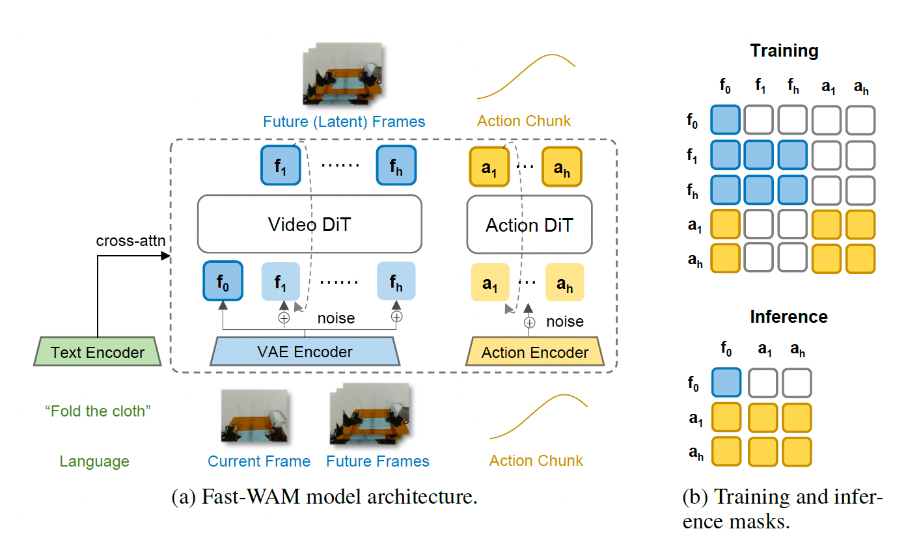
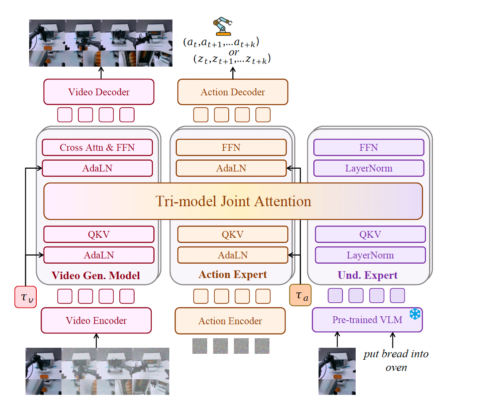
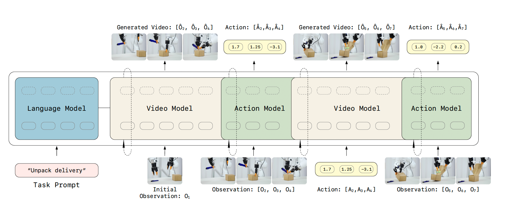

FastWAM
FastWAM
FastWAM 基于 Wan2.2-5B 的 Video DiT 学习真实世界的物理知识，并使用 Action DiT 生成动作 chunk。
训练时，模型生成未来视频帧，并通过 video co-training 学习真实物理知识；推理时去掉未来视频分支，只保留当前帧的 latent，通过 Video DiT 单次前向得到 world representation，再由 Action DiT 直接生成动作。

Reproduction
这里记录了复现的开源项目。
FastWAM
FastWAM 基于 Wan2.2-5B 的 Video DiT 学习真实世界的物理知识，并使用 Action DiT 生成动作 chunk。
训练时，模型生成未来视频帧，并通过 video co-training 学习真实物理知识；推理时去掉未来视频分支，只保留当前帧的 latent，通过 Video DiT 单次前向得到 world representation，再由 Action DiT 直接生成动作。

Motus
Motus 基于 Mixture-of-Transformer 架构，将 Video Generation Expert、Action Expert 和 Understanding Expert 三个模块使用 Tri-model Joint Attention 连接，让不同模态的信息可以相互交流。
Video Expert 负责对未来的预测，Action Expert 负责动作的生成，Understanding Expert 负责场景与指令理解。同时 Motus 利用 Optical Flow 学习 Latent Action，让模型能够从互联网视频、人类演示和机器人轨迹中学习运动先验，并通过动作密集、视频稀疏策略平衡视频与动作 token。

lingbot-va
LingBot-VA 是一个 autoregressive 的 Video Action Model。输入语言指令和当前图像后，先由 Video Model 在 latent space 中预测未来视觉状态，再由 Action Model 基于预测的视觉转移进行 inverse dynamics，输出对应的动作序列。
执行一段动作后，模型会接收新的真实观测，并继续进行下一轮未来视频预测和动作生成，从而形成感知、预测、动作执行和再观测的闭环。
